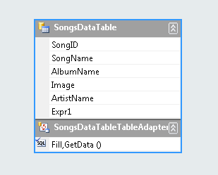
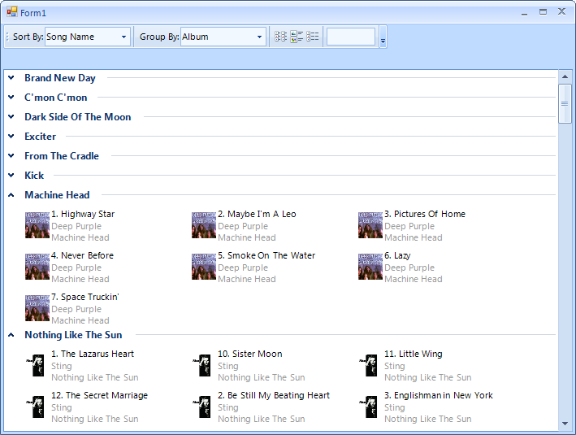

Getting started
This article will demonstrate the basic capabilities of RadListView, like filtering, grouping, sorting,
customizing items, etc. and it will show you in a step-by-step manner how to start creating applications
with RadListView.

For the sake of this example we are going to use a DataTable containing data about Artists, Albums, Songs and Image.

First let’s create a form with
RadCommandBar
docked Top and RadListView docked Fill. Add a
Strip to
RadCommandBar
and populate it with the following items:
| CommandBarLabel | * Text: “Sort By:” |
| CommandBarDropDownList | * Name: commandBarDropDownSort * Text: "" * Items: None, Song Name, Artist, Album |
| CommandBarSeparatorItem | |
| CommandBarLabel | * Text: “Group By:” |
| CommandBarDropDownList | * Name: commandBarDropDownGroup * Text: "" * Items: None, Album, Artist |
| CommandBarSeparatorItem | |
| CommandBarToggleButton | * Name: commandBarToggleButtonList * ToolTipText: “ListView” * Image: Some image representing ListView |
| CommandBarToggleButton | * Name: commandBarToggleButtonTiles * ToolTipText: “IconsView” * Image: Some image representing IconsView |
| CommandBarToggleButton | * Name: commandBarToggleButtonDetails * ToolTipText: “DetailsView” * Image: Some image representing DetailsView |
| CommandBarSeparatorItem | |
| CommandBarTextBox | * Name: commandBarTextBoxFilter * Text: “” |
At this point the form should like something similar to this:
Now let continue with setting the control DataSource, allow edit and remove
operations and subscribe to the events that we are going to use in this example.
[C#] Initial settings
this.radListView1.ItemDataBound += new Telerik.WinControls.UI.ListViewItemEventHandler(radListView1_ItemDataBound);
this.radListView1.VisualItemFormatting += new Telerik.WinControls.UI.ListViewVisualItemEventHandler(radListView1_VisualItemFormatting);
this.radListView1.CellFormatting += new Telerik.WinControls.UI.ListViewCellFormattingEventHandler(radListView1_CellFormatting);
this.radListView1.ColumnCreating += new ListViewColumnCreatingEventHandler(radListView1_ColumnCreating);
this.radListView1.ViewTypeChanged += new EventHandler(radListView1_ViewTypeChanged);
this.radListView1.AllowEdit = false;
this.radListView1.AllowRemove = false;
this.radListView1.DataSource = this.songsDataTableBindingSource;
this.radListView1.DisplayMember = "SongName";
this.radListView1.ValueMember = "SongID";
this.radListView1.ViewType = ListViewType.IconsView;
[VB.NET] Initial settings
AddHandler Me.RadListView1.ItemDataBound, AddressOf radListView1_ItemDataBound
AddHandler Me.RadListView1.VisualItemFormatting, AddressOf radListView1_VisualItemFormatting
AddHandler Me.RadListView1.ViewTypeChanged, AddressOf radListView1_ViewTypeChanged
AddHandler Me.RadListView1.CellFormatting, AddressOf radListView1_CellFormatting
AddHandler Me.RadListView1.ColumnCreating, AddressOf radListView1_ColumnCreating
Me.RadListView1.AllowEdit = False
Me.RadListView1.AllowRemove = False
Me.RadListView1.DataSource = Me.SongsDataTableBindingSource
Me.RadListView1.DisplayMember = "SongName"
Me.RadListView1.ValueMember = "SongID"
'#EndRegion
Me.RadListView1.ViewType = ListViewType.IconsView
End Sub
Private Sub ListViewGettingStarted_Load(sender As System.Object, e As System.EventArgs) Handles MyBase.Load
'TODO: This line of code loads data into the 'MusicCollectionDataSet._SongsDataTable' table. You can move, or remove it, as needed.
Me.SongsDataTableTableAdapter.Fill(Me.MusicCollectionDataSet._SongsDataTable)
End Sub
'#region ViewTypeChanged
Private Sub SetupDetailsView()
Me.RadListView1.AllowArbitraryItemHeight = True
End Sub
Private Sub SetupIconsView()
Me.RadListView1.ItemSize = New Size(200, 64)
Me.RadListView1.ItemSpacing = 5
Me.RadListView1.AllowArbitraryItemHeight = True
End Sub
Private Sub SetupSimpleListView()
Me.RadListView1.AllowArbitraryItemHeight = True
End Sub
Private Sub radListView1_ViewTypeChanged(sender As Object, e As EventArgs)
Select Case RadListView1.ViewType
Case ListViewType.ListView
SetupSimpleListView()
Exit Select
Case ListViewType.IconsView
SetupIconsView()
Exit Select
Case ListViewType.DetailsView
SetupDetailsView()
Exit Select
End Select
End Sub
Now, lets handle those events. In the event handler for the ItemDataBound event, we
will take the corresponding item image from the data source and we will assign it to the ListViewDataItem.
[C#] Set the item image to the data item
void radListView1_ItemDataBound(object sender, Telerik.WinControls.UI.ListViewItemEventArgs e)
{
DataRowView row = e.Item.DataBoundItem as DataRowView;
MusicCollectionDataSet.SongsDataTableRow songRow = row.Row as MusicCollectionDataSet.SongsDataTableRow;
e.Item.Image = Image.FromStream(new MemoryStream(songRow.Image), false, false);
}
[VB.NET] Set the item image to the data item
Private Sub radListView1_ItemDataBound(sender As Object, e As Telerik.WinControls.UI.ListViewItemEventArgs)
Dim row As DataRowView = TryCast(e.Item.DataBoundItem, DataRowView)
Dim songRow As MusicCollectionDataSet.SongsDataTableRow = TryCast(row.Row, MusicCollectionDataSet.SongsDataTableRow)
e.Item.Image = Image.FromStream(New MemoryStream(songRow.Image), False, False)
End Sub
Next lets hand the VisualItemFormatting event, where we will set the visual item
image. Additionally, for IconsView we will set the visual item text to a html-like combination
of the AlbumName, ArtistName and SongName.
[C#] Customize visual item
void radListView1_VisualItemFormatting(object sender, Telerik.WinControls.UI.ListViewVisualItemEventArgs e)
{
if (e.VisualItem.Data.Image != null)
{
e.VisualItem.Image = e.VisualItem.Data.Image.GetThumbnailImage(32, 32, null, IntPtr.Zero);
e.VisualItem.Layout.RightPart.Margin = new Padding(2, 0, 0, 0);
}
if (this.radListView1.ViewType == Telerik.WinControls.UI.ListViewType.IconsView && e.VisualItem.Data.DataBoundItem != null)
{
string albumName = ((MusicCollectionDataSet.SongsDataTableRow)(((System.Data.DataRowView)(e.VisualItem.Data.DataBoundItem)).Row)).AlbumName;
string artisName = ((MusicCollectionDataSet.SongsDataTableRow)(((System.Data.DataRowView)(e.VisualItem.Data.DataBoundItem)).Row)).ArtistName;
string songName = ((MusicCollectionDataSet.SongsDataTableRow)(((System.Data.DataRowView)(e.VisualItem.Data.DataBoundItem)).Row)).SongName;
e.VisualItem.Text = "<html> " + songName + "<br><span style=\"color:#999999\"> " + artisName + "<br> " + albumName + "</span>";
}
}
[VB.NET] Customize visual item
Private Sub radListView1_VisualItemFormatting(sender As Object, e As Telerik.WinControls.UI.ListViewVisualItemEventArgs)
If e.VisualItem.Data.Image IsNot Nothing Then
e.VisualItem.Image = e.VisualItem.Data.Image.GetThumbnailImage(32, 32, Nothing, IntPtr.Zero)
e.VisualItem.Layout.RightPart.Margin = New Windows.Forms.Padding(2, 0, 0, 0)
End If
If Me.RadListView1.ViewType = Telerik.WinControls.UI.ListViewType.IconsView AndAlso e.VisualItem.Data.DataBoundItem IsNot Nothing Then
Dim albumName As String = DirectCast(DirectCast(e.VisualItem.Data.DataBoundItem, System.Data.DataRowView).Row, MusicCollectionDataSet.SongsDataTableRow).AlbumName
Dim artisName As String = DirectCast(DirectCast(e.VisualItem.Data.DataBoundItem, System.Data.DataRowView).Row, MusicCollectionDataSet.SongsDataTableRow).ArtistName
Dim songName As String = DirectCast(DirectCast(e.VisualItem.Data.DataBoundItem, System.Data.DataRowView).Row, MusicCollectionDataSet.SongsDataTableRow).SongName
e.VisualItem.Text = "<html> " + songName + "<br><span style=""color:#999999""> " + artisName + "<br> " + albumName + "</span>"
End If
End Sub
The CellFormatting event is handled in order to customize the appearance
of the cells, when RadListView is in DetailsView. Here we will set the cell image.
[C#] Set the cell image
void radListView1_CellFormatting(object sender, ListViewCellFormattingEventArgs e)
{
if (e.CellElement.Image != null)
{
e.CellElement.Image = e.CellElement.Image.GetThumbnailImage(32, 32, null, IntPtr.Zero);
}
}
[VB.NET] Set the cell image
Private Sub radListView1_CellFormatting(sender As Object, e As ListViewCellFormattingEventArgs)
If e.CellElement.Image IsNot Nothing Then
e.CellElement.Image = e.CellElement.Image.GetThumbnailImage(32, 32, Nothing, IntPtr.Zero)
End If
End Sub
The ColumnCreating event is fired when a column is being created. This is convenient event to hide unwanted columns.
Additionally, we will use this event to set some more user friendly column headers.
[C#] Customize columns
void radListView1_ColumnCreating(object sender, ListViewColumnCreatingEventArgs e)
{
if (e.Column.FieldName == "SongID" || e.Column.FieldName == "Image")
{
e.Column.Visible = false;
}
if (e.Column.FieldName == "SongName")
{
e.Column.HeaderText = "Song Title";
}
if (e.Column.FieldName == "ArtistName")
{
e.Column.HeaderText = "Artist";
}
if (e.Column.FieldName == "AlbumName")
{
e.Column.HeaderText = "Album";
}
}
[VB.NET] Customize columns
Private Sub radListView1_ColumnCreating(sender As Object, e As ListViewColumnCreatingEventArgs)
If e.Column.FieldName = "SongID" OrElse e.Column.FieldName = "Image" Then
e.Column.Visible = False
End If
If e.Column.FieldName = "SongName" Then
e.Column.HeaderText = "Song Title"
End If
If e.Column.FieldName = "ArtistName" Then
e.Column.HeaderText = "Artist"
End If
If e.Column.FieldName = "AlbumName" Then
e.Column.HeaderText = "Album"
End If
End Sub
The last event of RadListView, which we are going to handle is the ViewTypeChanged event - fired when
the ViewType of the control is changed. This event is convenient to set view specific settings.
To handle the event, we will create three helper methods:
SetupDetailsView - here we will set the AllowArbitraryItemHeight,
property to true, in order to allow the items to size themselves in height,
according to their content.SetupIconsView - here we will define a custom size for the items, set some
spacing between the items and again set the AllowArbitraryItemHeight,
property to trueSetupSimpleListView - in this method we will only set the AllowArbitraryItemHeight,
property to true.
In the ViewTypeChanged event handler, we will simply check which is the new view and call the corresponding setup method
[C#] Handling view type changes
private void SetupDetailsView()
{
this.radListView1.AllowArbitraryItemHeight = true;
}
private void SetupIconsView()
{
this.radListView1.ItemSize = new Size(200, 64);
this.radListView1.ItemSpacing = 5;
this.radListView1.AllowArbitraryItemHeight = true;
}
private void SetupSimpleListView()
{
this.radListView1.AllowArbitraryItemHeight = true;
}
void radListView1_ViewTypeChanged(object sender, EventArgs e)
{
switch (radListView1.ViewType)
{
case ListViewType.ListView:
SetupSimpleListView();
break;
case ListViewType.IconsView:
SetupIconsView();
break;
case ListViewType.DetailsView:
SetupDetailsView();
break;
}
}
[VB.NET] Handling view type changes
Private Sub SetupDetailsView()
Me.RadListView1.AllowArbitraryItemHeight = True
End Sub
Private Sub SetupIconsView()
Me.RadListView1.ItemSize = New Size(200, 64)
Me.RadListView1.ItemSpacing = 5
Me.RadListView1.AllowArbitraryItemHeight = True
End Sub
Private Sub SetupSimpleListView()
Me.RadListView1.AllowArbitraryItemHeight = True
End Sub
Private Sub radListView1_ViewTypeChanged(sender As Object, e As EventArgs)
Select Case RadListView1.ViewType
Case ListViewType.ListView
SetupSimpleListView()
Exit Select
Case ListViewType.IconsView
SetupIconsView()
Exit Select
Case ListViewType.DetailsView
SetupDetailsView()
Exit Select
End Select
End Sub
Now we only need to fill up the RadCommandBar elements functionality.
First we are going to handle the view changing buttons. For this purpose, subscribe for the
ToggleStateChanged and ToggleStateChanging events
of all the CommandBarToggleButtons that we have added earlier. In the ToggleStateChanged
event handler, check which is the clicked button, and set the rest of the buttons to Off. Additionally, set the RadListView____ViewType according to the pressed button.
[C#] Handle the toggle buttons
private bool updatingToggleState = false;
private void ViewToggleButton_ToggleStateChanged(object sender, StateChangedEventArgs args)
{
if (updatingToggleState)
{
return;
}
this.updatingToggleState = true;
if (this.commandBarToggleButtonDetails != sender)
{
this.commandBarToggleButtonDetails.ToggleState = ToggleState.Off;
}
if (this.commandBarToggleButtonList != sender)
{
this.commandBarToggleButtonList.ToggleState = ToggleState.Off;
}
if (this.commandBarToggleButtonTiles != sender)
{
this.commandBarToggleButtonTiles.ToggleState = ToggleState.Off;
}
this.updatingToggleState = false;
if (this.commandBarToggleButtonDetails.ToggleState == ToggleState.On)
{
this.radListView1.ViewType = ListViewType.DetailsView;
}
if (this.commandBarToggleButtonList.ToggleState == ToggleState.On)
{
this.radListView1.ViewType = ListViewType.ListView;
}
if (this.commandBarToggleButtonTiles.ToggleState == ToggleState.On)
{
this.radListView1.ViewType = ListViewType.IconsView;
}
}
private void ViewToggleButton_ToggleStateChanging(object sender, StateChangingEventArgs args)
{
if (!updatingToggleState && args.OldValue == ToggleState.On)
{
args.Cancel = true;
}
}
[VB.NET] Handle the toggle buttons
Private updatingToggleState As Boolean = False
Private Sub ViewToggleButton_ToggleStateChanged(sender As Object, args As StateChangedEventArgs) Handles commandBarToggleButtonTiles.ToggleStateChanged, commandBarToggleButtonList.ToggleStateChanged, commandBarToggleButtonDetails.ToggleStateChanged
If updatingToggleState Then
Return
End If
Me.updatingToggleState = True
If Me.commandBarToggleButtonDetails IsNot sender Then
Me.commandBarToggleButtonDetails.ToggleState = ToggleState.Off
End If
If Me.commandBarToggleButtonList IsNot sender Then
Me.commandBarToggleButtonList.ToggleState = ToggleState.Off
End If
If Me.commandBarToggleButtonTiles IsNot sender Then
Me.commandBarToggleButtonTiles.ToggleState = ToggleState.Off
End If
Me.updatingToggleState = False
If Me.commandBarToggleButtonDetails.ToggleState = ToggleState.[On] Then
Me.RadListView1.ViewType = ListViewType.DetailsView
End If
If Me.commandBarToggleButtonList.ToggleState = ToggleState.[On] Then
Me.RadListView1.ViewType = ListViewType.ListView
End If
If Me.commandBarToggleButtonTiles.ToggleState = ToggleState.[On] Then
Me.RadListView1.ViewType = ListViewType.IconsView
End If
End Sub
Private Sub ViewToggleButton_ToggleStateChanging(sender As Object, args As StateChangingEventArgs) Handles commandBarToggleButtonTiles.ToggleStateChanging, commandBarToggleButtonList.ToggleStateChanging, commandBarToggleButtonDetails.ToggleStateChanging
If Not updatingToggleState AndAlso args.OldValue = ToggleState.[On] Then
args.Cancel = True
End If
End Sub
Next, subscribe to the SelectedIndexChanged event of
commandBarDropDownSortCommandBarDropDownList. In the
event handler, we are going to add the desired SortDescriptors, according to the
selected item in the drop down.
[C#] Handle sorting functionality
private void commandBarDropDownSort_SelectedIndexChanged(object sender, Telerik.WinControls.UI.Data.PositionChangedEventArgs e)
{
this.radListView1.SortDescriptors.Clear();
switch (this.commandBarDropDownSort.Text)
{
case "Song Name":
this.radListView1.SortDescriptors.Add(new SortDescriptor("SongName", ListSortDirection.Ascending));
this.radListView1.EnableSorting = true;
break;
case "Album":
this.radListView1.SortDescriptors.Add(new SortDescriptor("AlbumName", ListSortDirection.Ascending));
this.radListView1.EnableSorting = true;
break;
case "Artist":
this.radListView1.SortDescriptors.Add(new SortDescriptor("ArtistName", ListSortDirection.Ascending));
this.radListView1.EnableSorting = true;
break;
}
}
[VB.NET] Handle sorting functionality
Private Sub commandBarDropDownSort_SelectedIndexChanged(sender As Object, e As Telerik.WinControls.UI.Data.PositionChangedEventArgs) Handles commandBarDropDownSort.SelectedIndexChanged
Me.RadListView1.SortDescriptors.Clear()
Select Case Me.commandBarDropDownSort.Text
Case "Song Name"
Me.RadListView1.SortDescriptors.Add(New SortDescriptor("SongName", ListSortDirection.Ascending))
Me.RadListView1.EnableSorting = True
Exit Select
Case "Album"
Me.RadListView1.SortDescriptors.Add(New SortDescriptor("AlbumName", ListSortDirection.Ascending))
Me.RadListView1.EnableSorting = True
Exit Select
Case "Artist"
Me.RadListView1.SortDescriptors.Add(New SortDescriptor("ArtistName", ListSortDirection.Ascending))
Me.RadListView1.EnableSorting = True
Exit Select
End Select
End Sub
To add the grouping functionality, subscribe to the SelectedIndexChanged event of
commandBarDropDownGroup, CommandBarDropDownList. Similar
to the sorting functionality, add the desired GroupDescriptors according to the selected item.
[C#] Handle grouping functionality
private void commandBarDropDownGroup_SelectedIndexChanged(object sender, Telerik.WinControls.UI.Data.PositionChangedEventArgs e)
{
this.radListView1.GroupDescriptors.Clear();
switch (this.commandBarDropDownGroup.Text)
{
case "None":
this.radListView1.EnableGrouping = false;
this.radListView1.ShowGroups = false;
break;
case "Album":
this.radListView1.GroupDescriptors.Add(new GroupDescriptor(
new SortDescriptor[] { new SortDescriptor("AlbumName", ListSortDirection.Ascending) }));
this.radListView1.EnableGrouping = true;
this.radListView1.ShowGroups = true;
break;
case "Artist":
this.radListView1.GroupDescriptors.Add(new GroupDescriptor(
new SortDescriptor[] { new SortDescriptor("ArtistName", ListSortDirection.Ascending) }));
this.radListView1.EnableGrouping = true;
this.radListView1.ShowGroups = true;
break;
}
}
[VB.NET] Handle grouping functionality
Private Sub commandBarDropDownGroup_SelectedIndexChanged(sender As Object, e As Telerik.WinControls.UI.Data.PositionChangedEventArgs) Handles commandBarDropDownGroup.SelectedIndexChanged
Me.RadListView1.GroupDescriptors.Clear()
Select Case Me.commandBarDropDownGroup.Text
Case "None"
Me.RadListView1.EnableGrouping = False
Me.RadListView1.ShowGroups = False
Exit Select
Case "Album"
Me.RadListView1.GroupDescriptors.Add(New GroupDescriptor(New SortDescriptor() {New SortDescriptor("AlbumName", ListSortDirection.Ascending)}))
Me.RadListView1.EnableGrouping = True
Me.RadListView1.ShowGroups = True
Exit Select
Case "Artist"
Me.RadListView1.GroupDescriptors.Add(New GroupDescriptor(New SortDescriptor() {New SortDescriptor("ArtistName", ListSortDirection.Ascending)}))
Me.RadListView1.EnableGrouping = True
Me.RadListView1.ShowGroups = True
Exit Select
End Select
End Sub
Lastly, lets subscribe ot the TextChanged event of
commandBarTextBoxFilterCommandBarTextBox. Here we will
add FilterDescriptor according to the text entered in the text box:
[C#] Handle filtering functionality
private void commandBarTextBoxFilter_TextChanged(object sender, EventArgs e)
{
this.radListView1.FilterDescriptors.Clear();
if (String.IsNullOrEmpty(this.commandBarTextBoxFilter.Text))
{
this.radListView1.EnableFiltering = false;
}
else
{
this.radListView1.FilterDescriptors.LogicalOperator = FilterLogicalOperator.Or;
this.radListView1.FilterDescriptors.Add("SongName", FilterOperator.Contains, this.commandBarTextBoxFilter.Text);
this.radListView1.FilterDescriptors.Add("AlbumName", FilterOperator.Contains, this.commandBarTextBoxFilter.Text);
this.radListView1.FilterDescriptors.Add("ArtistName", FilterOperator.Contains, this.commandBarTextBoxFilter.Text);
this.radListView1.EnableFiltering = true;
}
}
[VB.NET] Handle filtering functionality
Private Sub commandBarTextBoxFilter_TextChanged(sender As Object, e As EventArgs) Handles commandBarTextBoxFilter.TextChanged
Me.RadListView1.FilterDescriptors.Clear()
If [String].IsNullOrEmpty(Me.commandBarTextBoxFilter.Text) Then
Me.RadListView1.EnableFiltering = False
Else
Me.RadListView1.FilterDescriptors.LogicalOperator = FilterLogicalOperator.[Or]
Me.RadListView1.FilterDescriptors.Add("SongName", FilterOperator.Contains, Me.commandBarTextBoxFilter.Text)
Me.RadListView1.FilterDescriptors.Add("AlbumName", FilterOperator.Contains, Me.commandBarTextBoxFilter.Text)
Me.RadListView1.FilterDescriptors.Add("ArtistName", FilterOperator.Contains, Me.commandBarTextBoxFilter.Text)
Me.RadListView1.EnableFiltering = True
End If
End Sub
Run the application and try the different functionalties: